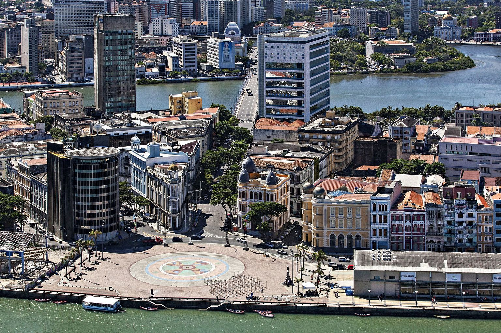
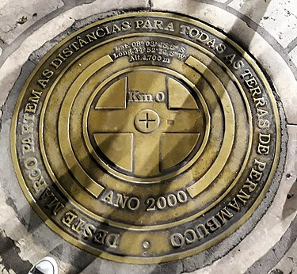
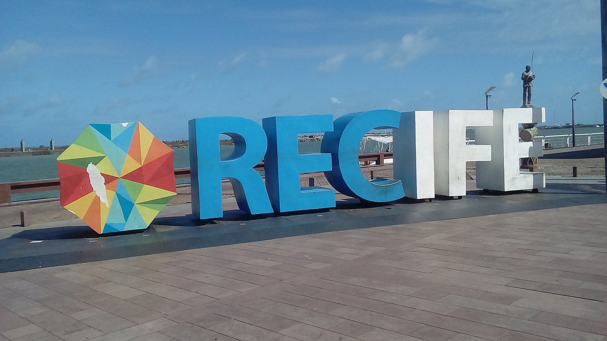
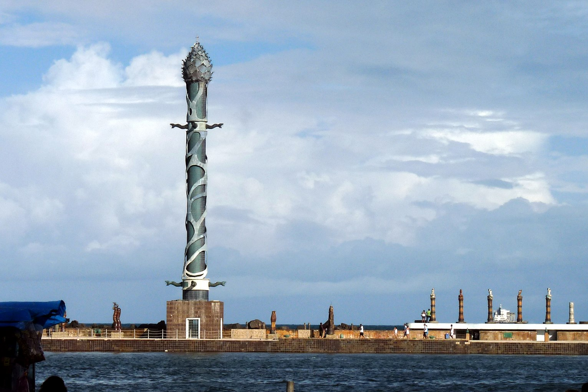

O Marco Zero - Recife/PE
O Marco Zero, na Praça Rio Branco, é conhecido como local de fundação da cidade do Recife e também como ponto inicial de contagem das distâncias calculadas a partir da cidade. O lugar é um dos pontos mais importantes na capital Pernambucana, pois é também uma região de forte movimento durante o Carnaval.
Localização

O local fica próximo ao Porto do Recife e abriga o Marco Zero da cidade do Recife (instalado em 31 de janeiro de 1938, pelo Automóvel Clube de Pernambuco). É deste marco que são feitas todas as medidas oficiais de distâncias rodoviárias locais. Oficialmente denominada de Praça Barão do Rio Branco, fica localizada na Av. Alfredo Lisboa conectada às ruas Marquês de Olinda, Rio Branco e Barbosa Lima.
História
No início do século passado, o centro do Recife passou por drásticas reformas, com projetos de higienização urbana e melhoramento das condições do Porto do Recife. Na prática, a higienização social se traduziu em desapropriações de pelo menos 480 imóveis que foram demolidos para a abertura das três novas avenidas no Bairro.
Com esta grande reforma, profundas modificações foram feitas no bairro e na praça, como a demolição da Matriz do Corpo Santo e a abertura de novas e largas avenidas. No local onde estava a igreja, está edificado o edifício Maurício de Nassau, de características modernas e fachadas em vidro. Ao seu lado foram construídos os prédios da Associação Comercial de Pernambuco e a Bolsa de Valores. Estes dois prédios apresentam, em sua arquitetura, nítida influência francesa que se caracteriza pela mistura de diversos elementos construtivos, além do armazém 10 e 12 que serviam ao porto do Recife para estoque de açúcar. Estes prédios, hoje, abrigam a sede do Grupo Industrial João Santos, o Santander Cultural, a Associação Comercial de Pernambuco, a Caixa Cultural e o Centro de Artesanato de Pernambuco, considerado o maior do segmento no Brasil.
Em 1999 a praça que existia no local recebeu severas modificações. O busto do Barão do Rio Branco e o Marco Zero foram realocados para a borda da praça. A "nova praça" foi projetada pelo pintor Cícero Dias, em 1999. No seu centro se encontra uma enorme obra de arte feita por ele. Inspirado em sua obra Eu vi o mundo e ele começava no Recife, criou um grande circulo com uma Rosa dos Ventos no centro. A obra tem em média 10m de raio.
O que fazer?
Aproveite sua visita para tirar uma foto com os dois marcos (o antigo e o novo), observar a vista para o Parque de Esculturas e os edifícios do Centro Cultural da Caixa e da Associação Comercial de Pernambuco.
Se quiser fazer compras, vale a pena visitar o novo Mercado de Artesanato, que também fica no local.
Galeria de Fotos
 
